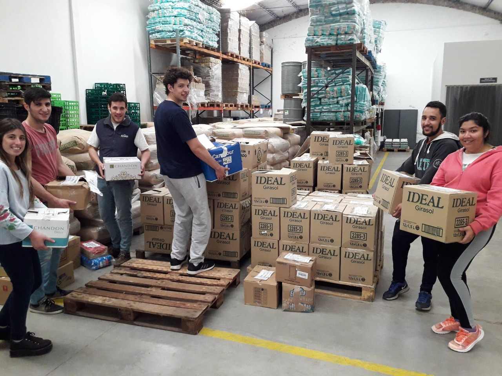
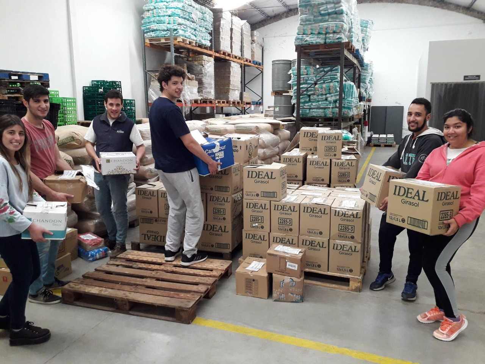

ACERCA DE NOSOTROS
Funcionamos como un puente entre aquellos que sufren hambre y quienes desean colaborar a través de un canal transparente y eficiente que garantice que las donaciones llegarán a quienes más lo necesiten. Para eso solicitamos la donación de alimentos aptos para el consumo humano, los almacenamos, clasificamos y distribuimos, entre organizaciones comunitarias que brindan servicio alimentario a instituciones.
Somos una ONG que devuelve el valor a los alimentos que han perdido su valor comercial y que de otra forma serían desechados. Contribuyendo de esta forma ha mejorar nuestro ecosistema.
Así colaboramos con la alimentación de 16.400 personas. Llegamos a ellas a través de 113 organizaciones (comedores, hogares, apoyos escolares, parroquias, etc.) ubicadas en la ciudad de Tandil y la zona que brindan servicio alimentario.
La Fundación Banco de Alimentos Tandil es miembro de la Red Argentina de Bancos de Alimentos y es parte de la Red Global de Bancos de Alimentos, Global Food Banking Network, con sede en Estados Unidos.
Noticias
¡SUMA TU PLATO!
En este momento tan difícil TE NECESITAMOS. Juntos podemos LLENAR LOS PLATOS que aun se encuentran vacíos.
Desde el Banco de Alimentos Tandil seguimos trabajando para mejorar la alimentación y nutrición de los sectores más vulnerables de nuestra ciudad y la zona, recuperando alimentos que salen del circuito comercial pero son aptos para el consumo a fin de almacenarlos, clasificarlos y distribuirlos entre 118 organizaciones de ayuda comunitaria: comedores, hogares de niños y de ancianos, centros comunitarios y de apoyo escolar, entre otros. Son más de 16.900 personas, en su mayoría niños que reciben ayuda alimentaria.
En esta campaña ¡SUMA TU PLATO! tenes la oportunidad de sumarte a esta cruzada solidaria de emergencia sin moverte de tu casa.
Ingresa en https://www.donaronline.org/…/en-este-momento-dificil-te-ne… y elegí cuantos PLATOS DE COMIDA queres donar por única vez o en forma mensual.
O bien podes sumarte transfiriendo desde tu homebanking al
CBU 03402834 00283018198004
Combatamos el Hambre, Alimentando Esperanzas.
Tandil Camina 2020 SUSPENDIDA
Conforme los hechos de público y notorio conocimiento el Banco De Alimentos Tandil y la Asociación Graduados Tandil informan que la 12º edición de la Correcaminata está SUSPENDIDA por la situación sanitaria del Coronavirus (COVID-19).
La misma será reprogramada ante las autoridades Municipales pertinentes con fecha a confirmar.
Recomendaciones y medidas de prevención:
* Lavarse las manos frecuentemente, sobre todo antes de ingerir alimentos y bebidas, y luego del contacto con superficies en áreas públicas.
* Al toser o estornudar, cubrirse la nariz y la boca con el pliegue del codo. Lavarse las manos inmediatamente después o aplicarse alcohol en gel.
* Ante un cuadro gripal, no se automedique. Consulte a su Médico de cabecera o comunicarse al teléfono de emergencias. (107)
*El uso de barbijo está recomendado SOLO en caso de presentar síntomas respiratorios.
* Consulta precoz en caso de síntomas y antecedente de contacto con casos confirmados o de viajes a ciudades con circulación viral.
Carrefour y su Fundación Internacional realizarán la 7º Colecta Internacional de Alimentos.
• Durante noviembre y diciembre se llevará a cabo por septimo año consecutivo la Colecta Internacional de Alimentos a beneficio de los Bancos de Alimentos en 10 países: Taiwan, Argentina, Brasil, Rumanía, Francia, Italia, España, China, Polonia y Bélgica
• En total participarán más de 2.000 sucursales en todo el mundo para colaborar con la nutrición de quienes más lo necesitan.
• Carrefour Argentina se sumará el sábado 7 de diciembre cediendo un espacio en sus tiendas para que sus clientes puedan colaborar con los Bancos de Alimentos del país.
En las tiendas los voluntarios de Carrefour se movilizarán ayudando a los voluntarios de los BdA para sensibilizar a los clientes y recibir los productos que se les entreguen. Los alimentos sugeridos para la donación son: arroz y puré de tomate.